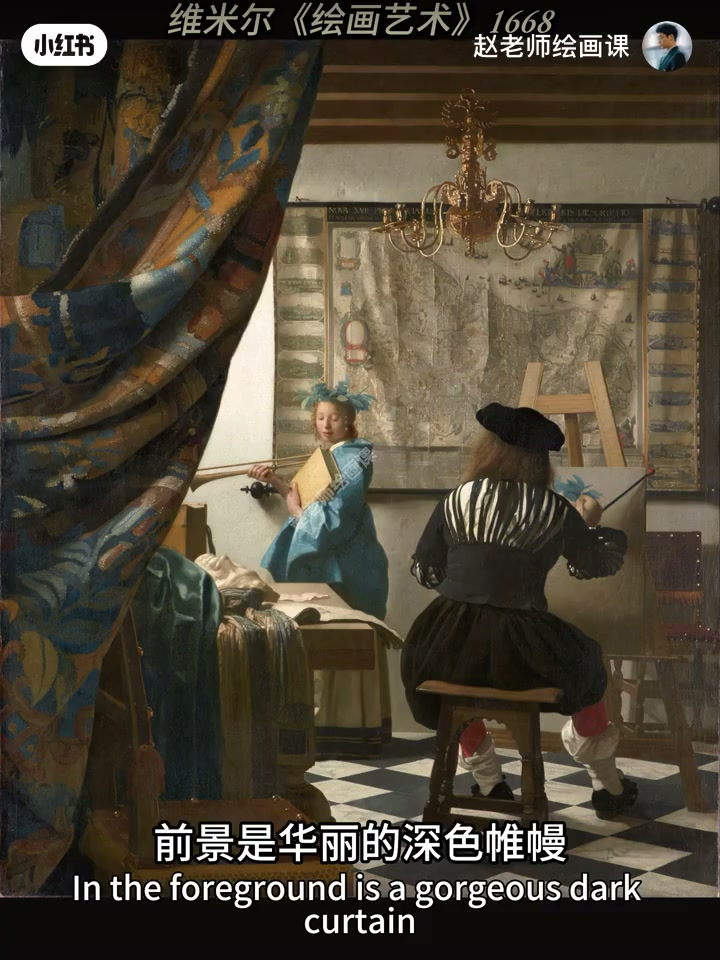
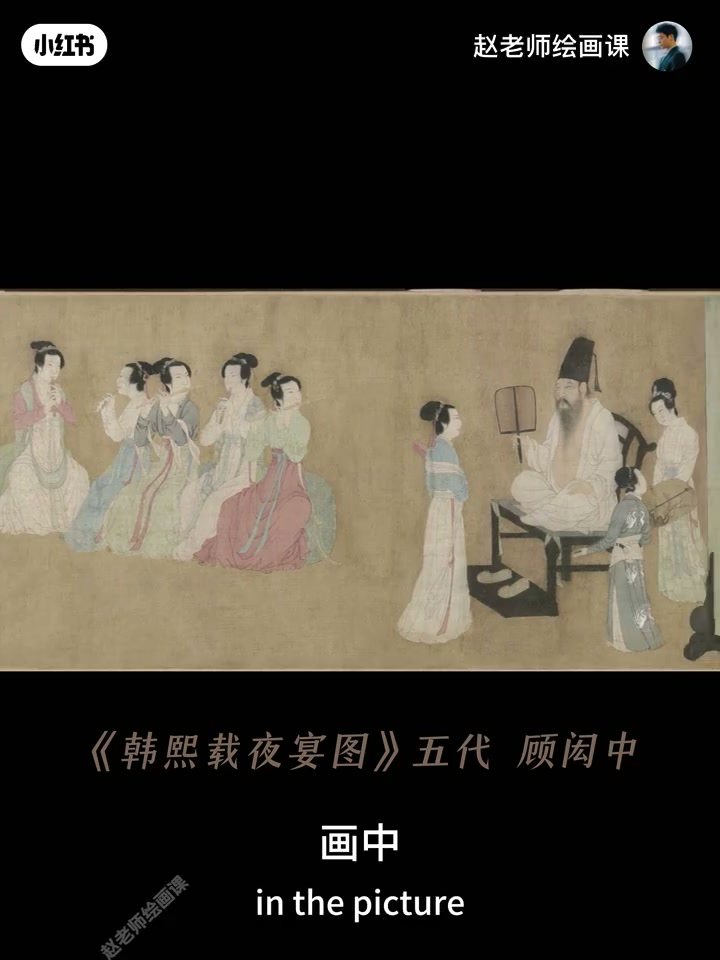
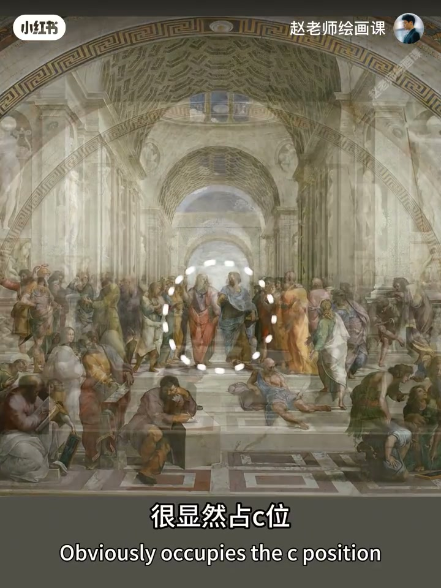
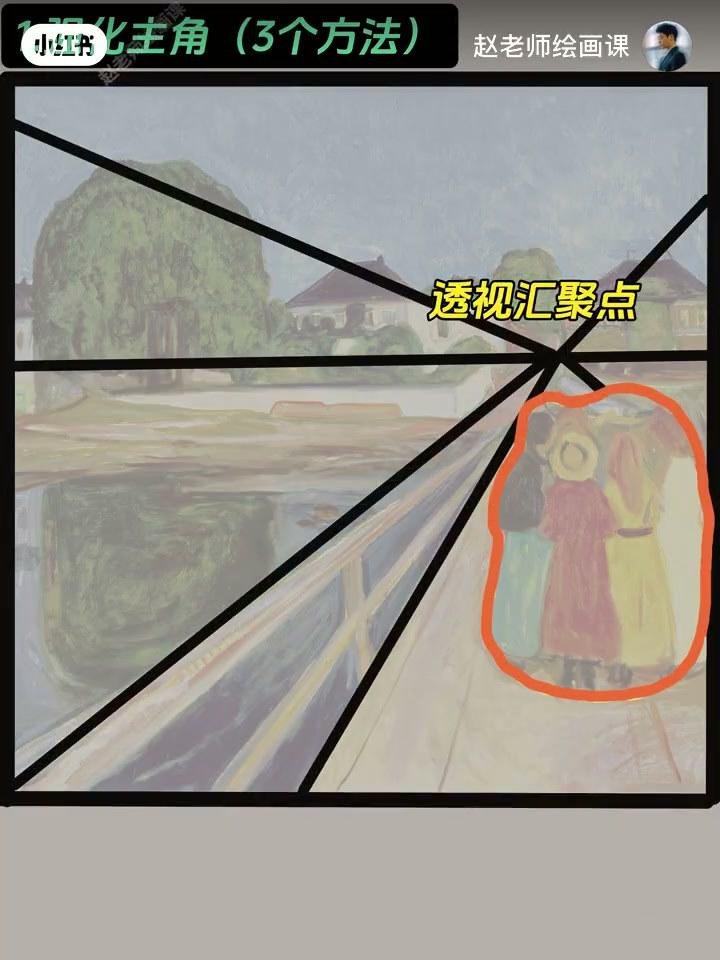

内容要点
赵吾象说多人就头大、总像到此一游，问题不在人多而在布局。三招：①制造空间感——维米尔《绘画艺术》前中后景错落，摄影用前景遮挡／站位／虚化，绘画用明暗冷暖面积加深层次；②拿捏疏密——《韩熙载夜宴图》聚散有致，遮掉疏只留密会喘不过气，分组留缝＋眼神姿态暗连；③主次加引导——《雅典学院》C 位最大最亮视线汇聚拱门框定，配角弱化，再用三分／透视／光照与引导线带视线。
知识结构
前中后景透气；遮挡／虚化／明暗冷暖。
聚散呼吸；分组留缝＋隐含联系。
强化主角弱化配角；引导线带视线。
多人构图三件事：层次透气、疏密会呼吸、主次能被一眼锁住并被引导线带走。
00:00-01:12第一招：制造空间感让画面透气
开场对比游客合影式失败。人多不是问题，关键在布局。维米尔《绘画艺术》：前景深色帷幔、中景画家背影与光下模特、背景虚化地图，位置错落空间强；去掉帷幔与地图只剩并排，瞬间回游客照。
操作：摄影——前景遮挡、不同距离站位、大光圈虚化；绘画——明暗、冷暖、面积对比加深层次。00:25。

01:12-02:16第二招：疏密关系营造呼吸感
顾闳中《韩熙载夜宴图》听乐、观舞、休息等场景人物聚散有致：听乐集中、旁有独立、休息分散却眼神动作相连，疏密带来节奏与呼吸。用手遮住较疏一侧只留密集人群，会马上喘不过气。
操作：分组，用道具环境分割，组间留自然空隙；用眼神姿态暗示关联，避免割裂，在聚与散、松与紧中做节奏。01:20。

02:16-03:42第三招：主次加引导让视线跟着走
拉斐尔《雅典学院》为何一眼锁柏拉图与亚里士多德：站 C 位、体型最大、光线最亮、周围视线交聚、背景拱门框定；其他学者姿态明暗清晰度弱化，主次分明。
做：强化主角——视觉中心（三分／黄金分割）、透视汇聚、光照亮主角配角偏暗；再造引导——眼神、线条等让目光有序观看。02:30／03:05。


完整转录（99段）
以下文本由 Whisper medium 模型自动转录，可能存在少量识别误差，已尽可能修正。
很多同学一画多人就头大
玩死了
要么像这样
要么这样
总是摆脱不了那股浓浓的到此一有感
其实人多不是问题
关键在于布局
想要告别游客照秘密呢
就在这三招
第一招
制造空间感让画面透气
来看看维米尔的绘画艺术
前景是华丽的深色围漫
中景是画家背影和光影下的模特
背景则是虚化的地图
位置错落
空间感强烈
试想一下
如果去掉前面的围漫
和背景的地图
只剩画家和模特并排站
是不是瞬间
那该具体怎么操作呢
一是利用前景遮挡
不同距离站位
大光圈虚化背景等等
制造空间感
这是摄影常见的做法
第二呢
可以利用画面明暗对比
冷暖对比
面积对比等
来有效加深空间层次感
这个是绘画中的常见办法
第二招
拿捏书密关系
营造呼吸感
来看五代画家顾鸿中的名作
《寒夕在夜宴图》
画中听乐、观舞、休息等不同场景下
人物聚散有致
听乐时集中
旁边是女独立
休息时分散
但眼神动作又有联系
如此精妙的书密关系
赋予了画面节奏感和呼吸感
试一试啊
用手遮住画面左边较收的部分
只留右边密集的人群
是不是感觉马上喘不过气来
这会导致什么呢
那该如何操作
一是可以试试分组
利用道具、环境来分割人群
让左与左之间流出自然的空隙
第二
要学会制造一些隐含的联系
可以利用人物眼神姿态等细节
暗示一些关联
避免割裂感
让画面在聚与散、送与紧中
营造出丰富的节奏感和呼吸感
第三招呢
利用主次加引导
让视线跟著走
来看拉斐尔雅典学院
为什么中心位置的柏拉图和亚里士多德
一眼就能锁定
很显然
站C位
体型最大
光线最亮
周围人群视线交聚
以及背景拱门框定
如此成就了主角地位
周围其他学者虽然也很重要
但姿态、明暗、清晰度都做了弱化处理
使得主次清晰分明
那该如何做呢?
首先要学会强化主角
可以把核心人物放在视觉中心
比如三分点、黄金分割点等等
或者用透视引导线的汇聚点来强调主角
也可以用光照亮主角
让配角处于相对暗的阴影中
第二呢要学会制造一些视线引导
可以利用人物细节、眼神、线条等等
制造这样的引导线
让观众目光有序的来观看
那做到以上
你的画面感染力一定爆棚
想要系统掌握构图核心方法
在我的构图系统课中
以构图加形式美法则两大内容为主导
通过大量的经典案例拆解
搭配针对性练习
让你的创作力和审美力双飞升
下期见喽,拜拜